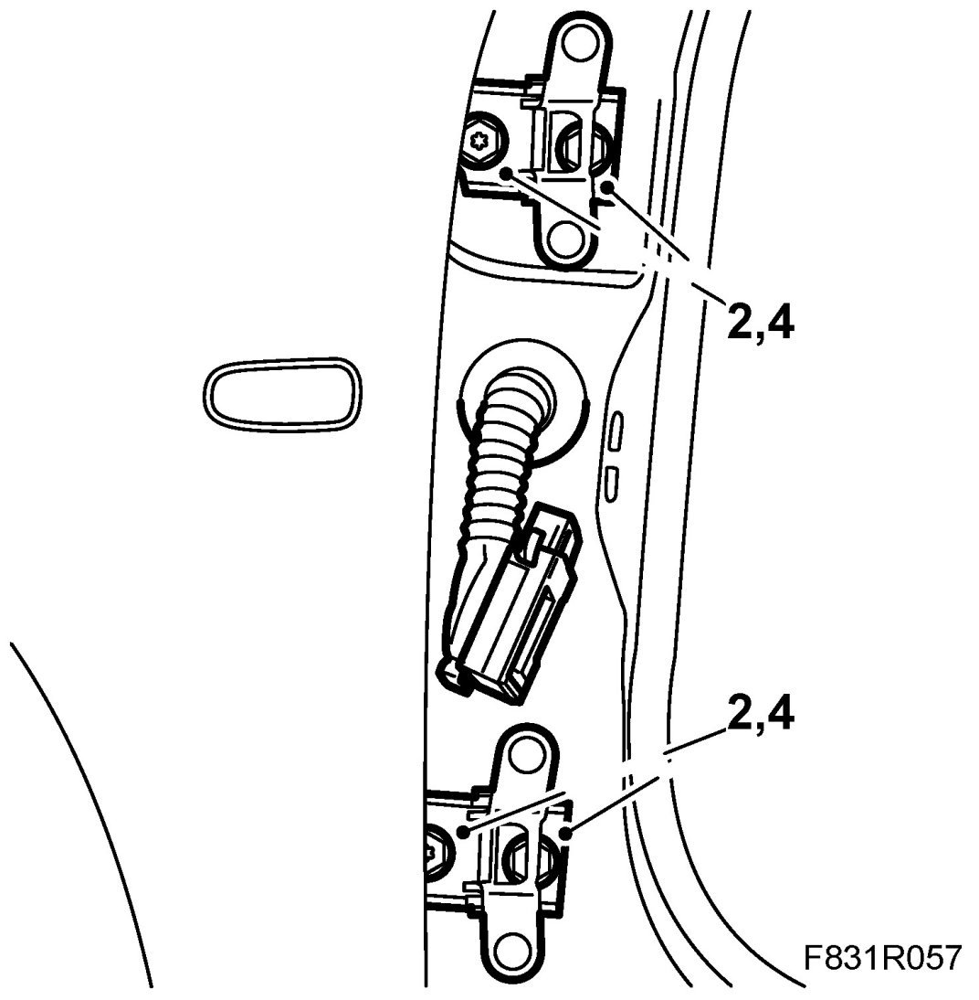
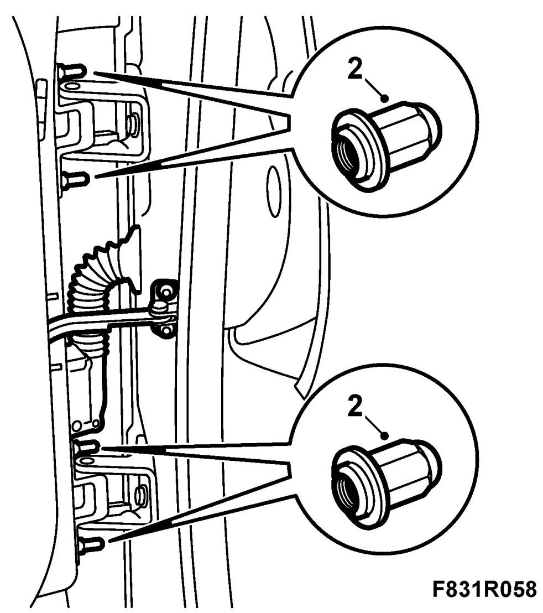

Front Door: Adjustments
Front Door, Adjustment
Adjusting the front door forwards - backwards
1. Remove the front door or the front wing.
2. Slacken the hinge bolts so that the door hinges can just be moved.

3. Hang the removed door. Adjust the door.
4. Lift off the removed door again. Tighten the hinges.
5. Fit the door or front wing.
Cars with pinch protection: Perform Programming of the pinch protection.
Adjusting the front door upwards - downwards, outwards - inwards
1. Open the front door
2. Remove the relevant nut depending on the adjustment. Grind off the taper of the nut for better adjustment allowance.

3. Fit the ground nut. Undo all the other nuts slightly.
4. Adjust the door and tighten the nuts. Check the door alignment.